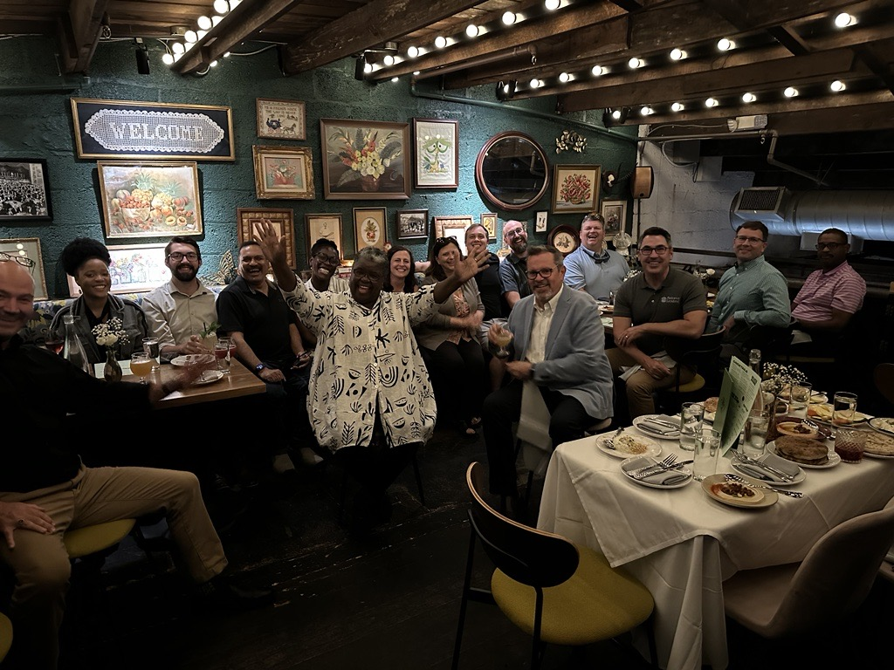
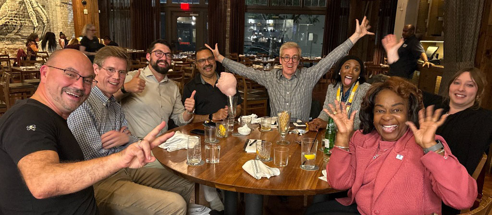
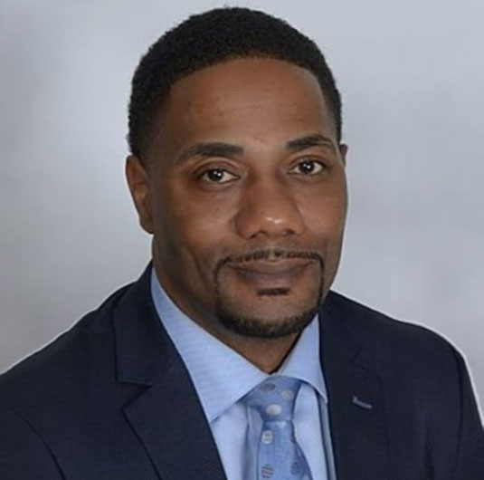
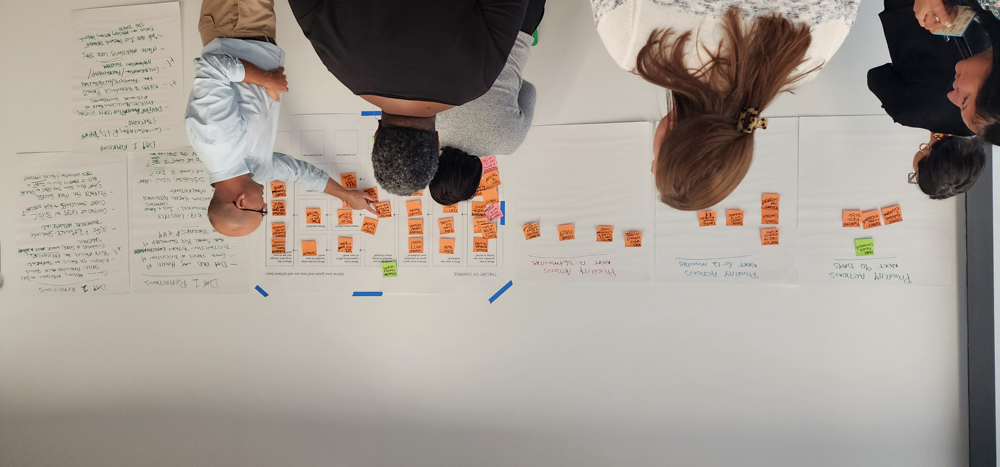

Rooted in Community.
Connected for Regional Scale.
Appalachian Community Capital (ACC) is a nonprofit Community Development Financial Institution (CDFI) working to expand economic opportunity and strengthen locally rooted institutions across Appalachia.
A Network for Collaboration, Investment, and Innovation
Appalachian Community Capital (ACC) was created to solve a fundamental regional challenge: how to bring investment into rural communities while ensuring that local leaders maintain control over the decisions affecting their economies.
Today, our membership brings together 46 community-based CDFIs holding more than $5 billion in combined assets. We combine this unparalleled on-the-ground intelligence with regional scale, attracting national capital and building innovative programs.

Our Mission & Core Strategy
Our model keeps decisions close to communities while building regional scale that no individual lender could accomplish alone.
Our Mission
ACC’s mission is to increase small business lending by providing Appalachian member institutions that serve underserved people and communities with new sources of capital. ACC is committed to providing reliable and sufficient capital for all its members, leading to a growing economy, increased entrepreneurship, higher quality jobs, and increased local wealth in the Appalachian region.
History & Milestones
How an innovative pilot evolved into a nationwide model for community development finance.
Founding & Launch
Founded by the Appalachian Regional Commission (ARC) and regional partners to solve a persistent challenge: community lenders needed greater access to capital, but individually lacked the scale to efficiently reach institutional investors. With $15.5 million in seed capital, ACC began full operations in 2015.
Expanding Member Capital & Reach
ACC raised an additional $40 million for member CDFIs, financing 251 small businesses across 13 Appalachian states. These investments helped create or sustain nearly 3,000 quality jobs, establishing ACC as an indispensable wholesale intermediary.
National Energy & Climate Expansion
As rural needs evolved, ACC expanded nationally to support financing for low- and zero-emission technologies and services. ACC created a national membership for aligned organizations serving energy transition communities, culminating in the launch of the Green Bank for Rural America.
A Collaborative Regional Network
Today, ACC brings together community lenders, impact investors, banks, and public partners to launch transformative initiatives—including the $55M Western NC Small Business relief program, Opportunity Appalachia, and the DeepRoots Data Analytics Hub.
Experienced Leadership Dedicated to Appalachia
Our leadership team blends decades of expertise across CDFI management, commercial lending, blended finance, climate investment, and strategic communications.

With nearly 30 years of rural business development and nonprofit leadership, Daniel’s experience includes owning and operating a small business and serving as Executive Director of an arts organization. He leads with an entrepreneurial spirit, expertise in community development, and a passion for making a difference in rural communities.
Daniel joins ACC from the Green Bank for Rural America, an ACC subsidiary he has led since its launch. The Green Bank—established to accelerate investment in rural enterprises, community projects, and energy-resilient infrastructure—was seeded with an award of $500 million in funding through a grant from the U.S. Environmental Protection Agency. Under Daniel’s leadership, the Green Bank identified more than $328 million in energy-related businesses and projects.
Prior to his role at the Green Bank, Daniel served as Chief Investment Officer at Coastal Enterprises, Inc. (CEI), where he spearheaded new financing tools to expand access to capital for low-income communities and entrepreneurs overlooked by traditional financial markets. During his tenure, CEI’s loan and investment portfolio grew to a record $78 million.
Shauna Yeldell has more than 25 years of commercial lending and credit risk management experience with traditional and mission-based financial institutions. In her role as Chief Lending Officer for Appalachian Community Capital, she oversees all wholesale credit facilities, underwriting guidelines, member loan participations, and portfolio risk management.
Her extensive experience includes serving as Chief Lending Officer of a certified Community Development Financial Institution in Washington, DC, where she oversaw complex community financing and small business credit operations.
Throughout her career, Shauna has managed loan and investment portfolios exceeding $100 million spanning commercial and industrial businesses, municipal projects, affordable housing developments, regional community development organizations, and public-private partnerships.
Kelli Bryant is a versatile Executive Support Professional with extensive experience in program management, strategic relationship development, and executive office operations. She brings nearly 15 years of nonprofit leadership experience and a combination of strong project management, writing and editing, research, and administrative support experience to Appalachian Community Capital.
Her proven ability to manage complex schedules, coordinate key initiatives, and deliver high-quality results has been demonstrated across roles in both nonprofit and educational sectors. Kelli holds a Master of Arts in Community Psychology with a concentration in Program Development from the University of New Haven and a Bachelor of Arts in Psychology from Michigan State University.
Kelli is recognized for her proactive problem-solving skills, confidentiality, and a commitment to fostering teamwork. Notable achievements include streamlining board meeting processes, creating innovative tracking systems, and successfully managing high-impact events.
She thrives in dynamic environments where her strategic planning abilities and dedication to excellence drive operational success, while her passion for community engagement ensures meaningful regional impact.
Osayamen Bartholomew is an impact strategist, communications leader, and the founder and CEO of The Gift Agency LLC (TGA), a certified Minority and Women-Owned Business Enterprise (M/WBE) specializing in strategic communications, program operations, and event marketing for mission-driven organizations.
As Communications Director for Appalachian Community Capital, Osayamen directs institutional brand positioning, media relations, stakeholder storytelling, and major publication campaigns, showcasing how ACC and its 46-member CDFI network unlock catalytic capital across the region.
With over 15 years of leadership across media, commercial real estate, non-profit, and education sectors, her background includes serving as Chief Program Officer for Project REAP and managing strategic marketing initiatives for the Real Estate Executive Council (REEC) and the NYC Bar Association. She was recognized as a Crain's New York Business Notable Black Leader and Executive.
Jesse Fripp brings nearly 30 years of global executive leadership, strategic governance, and development finance experience to Appalachian Community Capital. He serves as Principal and CEO of Shining Rock Ventures, advising institutions on agile capital structures, blended finance, and sustainable economic transitions across Western North Carolina and the greater Appalachian region.
At ACC and the Green Bank for Rural America, Jesse leads blended capital strategy, designing multi-tier investment stacks that combine federal award capital, philanthropic credit enhancement, and private co-investment to maximize catalytic leverage for rural community development lenders.
His previous career includes senior leadership and governance roles with the Aga Khan Development Network, Triodos Bank Group, ShoreBank Corporation, BearingPoint, Global Communities, and Vitas Finance. Jesse holds a Master of Public Management from the University of Maryland and Certification in Corporate Governance with Distinction from the Institute of Directors (UK).

John is a seasoned financial executive with diverse leadership experiences across multiple industries including community development financing, public accounting, non-profit management, manufacturing, education, and banking. He accrued his financial expertise over more than 20 years of high-performance leadership with a proven record in effective debt and equity credit management, leveraging these experiences into strategic leadership within community development finance.
In his role as Chief Financial Officer, John holds responsibility for Appalachian Community Capital’s financial strategy and planning, budgeting, audit and tax compliance, risk management, and financial reporting. As the senior officer managing fiscal operations, he ensures the financial integrity of ACC and plays a critical role partnering with the Board of Directors, Finance, and Audit committees in strategic decision-making.
John is a native of West Baltimore, and giving back to the community is essential for him. He has served on several non-profit boards in his local community over the past decade, championing equitable economic opportunities and financial inclusion.
Pam Porter is the Chief Executive Officer of the Green Bank for Rural America, an Appalachian Community Capital subsidiary established to deploy a historic $500 million EPA Greenhouse Gas Reduction Fund award under the Clean Communities Investment Accelerator (CCIA). Under her leadership, the Green Bank provides capital and technical assistance to community lenders, accelerating solar, energy efficiency, and low-carbon infrastructure investments in rural America.
Pam is also the founder and senior consultant of Stepping Stone Partners, a boutique consulting practice assisting CDFIs, foundations, and public agencies with strategic capitalization, impact studies, and leadership succession planning. She has collaborated with ACC and its member network for many years on portfolio expansion and capital innovation.
Previously, Pam spent nearly a decade leading Strategic Consulting at Opportunity Finance Network (OFN), where she worked extensively with CDFI practitioners, commercial banks, and philanthropic partners to deploy more than $700 million in impact capital. She holds a B.A. in Economics from Wellesley College.
Liz Rogers is the founder and CEO of Tern Strategies, a consultancy specializing in community development finance, strategic communications, program design, and investor relations. At Appalachian Community Capital, she serves as Investment Products Lead, directing the architecture and placement of innovative capital products across ACC's 46-member CDFI network.
Prior to founding Tern Strategies, Liz served as Chief Communications Officer and Head of Investor Relations at Coastal Enterprises, Inc. (CEI), where she oversaw the CEI Investment Notes program and doubled note capital to nearly $18 million. Across her career, she has helped raise more than $160 million in catalytic investments, philanthropic contributions, and federal grant awards.
Her work bridges mission-driven CDFIs with values-aligned institutions, family offices, and foundations, equipping regional lenders with standardized investor note curricula, capital raising strategies, and blended finance structures.
Governed by Regional CDFI & Community Leaders
Our board of directors brings together seasoned executives from community development financial institutions, regional development agencies, and financial institutions across Appalachia.
Clint Gwin is ACC Board Chair and President of Pathway Lending in Tennessee. He has deep expertise in scaling community development financial institutions, having grown Pathway's annual loan originations from $3.4 million in 2003 to $76.8 million in 2016.
Under his leadership, Pathway developed a high-volume development services program delivering specialized technical assistance to over 1,440 businesses across the region. Mr. Gwin possesses expert skills in capital development, having raised more than $60 million in catalytic loan capital to expand economic opportunity.
Matt Raker is an economic developer focused on place-based and entrepreneurial strategies. He serves as Executive Director at Mountain BizWorks where he helps expand local business ownership across Western North Carolina by increasing access to capital and high-quality peer learning programs.
Over the last five years, Matt and the BizWorks team have increased lending capacity more than five-fold, helped start 473 new companies, supported over 750 business expansions, and maintained active financing projects across 26 Western North Carolina counties. Prior to Mountain BizWorks, Matt directed entrepreneurial development at a state-sponsored economic development agency generating over $150M in regional investment. He holds degrees in Economics and Natural Resources Management from UNC Asheville.
Marten Jenkins is the founder of Partner Community Capital (PCAP) and is responsible for developing, implementing, and overseeing all business strategies, operational and capital fundraising, and fund operations.
Over the past decade, PCAP has expanded its lending and technical assistance services to a nine-state region spanning Central Appalachia and the Southeast, including West Virginia, North Carolina, and the Appalachian regions of Maryland, Ohio, Kentucky, Tennessee, Virginia, South Carolina, and Georgia. Mr. Jenkins is a recognized pioneer in Appalachian community development finance.
Neill S. Wright is President and CEO of Birmingham-based Bronze Valley, an early-stage venture-focused CDFI investment platform that supports high-growth, innovation, and technology companies led by diverse, underrepresented, and underestimated founders.
Neill brings nearly 30 years of experience as an investor, entrepreneur, and operating executive. Most recently, he served as Chairman, President, and CEO of First Tuskegee Bank, a CDFI commercial bank, which he successfully positioned and sold to a southeast regional bank. Prior to First Tuskegee, he was a Founding Partner of Harbour Place Capital in New York, and previously worked in investment banking at Citigroup and JPMorgan. He holds a B.A. from The College of William & Mary.
Henry A. Golatt is the Founder & Principal of HG Consulting Services, LLC and Managing Partner of Growth AdvantEdge. A seasoned economic development strategist, he brings more than two decades of experience in real estate investment, community development finance, entrepreneurship, and public-private partnerships.
During his tenure with the City of Columbus, Ohio, he oversaw CDFIs participating in the city’s Revolving Loan Fund and led small business relief distributions during COVID-19, earning recognition as a Diversity Champion by Columbus Business First. In Arkansas, he partnered with Hope Enterprise Corporation and Hope Credit Union to develop municipal microloan programs. As ACC’s incoming Loan Committee Chair, Henry brings extensive credit structuring expertise grounded in his philosophy: “Always Seek to Empower by Adding Value.”
Clyde Cornett serves as Chief Financial Officer for Locus, having previously served as Chief Financial Officer and Chief Operating Officer from 2008 to 2015. Prior to Locus, he was a Senior Manager at a public accounting firm supervising audits, SEC reporting, and credit reviews for community banks ranging in asset size from $100 million to over $1 billion.
He serves on the boards of Appalachian Community Capital Corporation and ACC Development Foundation, and participated in the Center for Community Investment’s Connect Capital initiative to create Invest Appalachia. He is an advisor to the New River Valley Development Corporation's revolving loan fund and was named Virginia Business Magazine’s Small Nonprofit CFO of the Year in 2014 and 2023. He holds a B.A. in Accounting from UVA's College at Wise and is a licensed CPA.
Ray Christman’s career spans four decades of leadership in urban economic development, commercial banking, and conservation finance. He has served as head of Pittsburgh’s Urban Redevelopment Authority, Secretary of Commerce for Pennsylvania, and President of the Pittsburgh Technology Council.
In banking, Mr. Christman served as Chair of the Federal Home Loan Bank of Pittsburgh and later as President and CEO of the Federal Home Loan Bank of Atlanta. He subsequently helped establish Hamilton State Bank in Georgia, growing it into one of the state's largest banks before its sale in 2018. He has also served as Senior Vice President of the Trust for Public Land and is a board member of Southern Bancorp Community Partners.
Robin Gabbard serves as President of the Mountain Association, a 50-year-old nonprofit and Community Development Financial Institution committed to building a more diverse and resilient economy across all 54 Eastern Kentucky counties.
With more than three decades of leadership across the community foundation and community action sectors, Robin has dedicated her career to strengthening Appalachian communities through capacity building, local leadership, and equitable capital access. Deeply rooted in Perry County and Buckhorn, Kentucky, she champions place-led economic transitions throughout Central Appalachia.
T.J. Bogdewic is President and Chief Executive Officer of Bridgeway Capital, a Pittsburgh-based CDFI focused on expanding access to capital and advancing economic opportunity. He has led Bridgeway since 2019, following prior service as Chief Lending and Credit Officer.
Before joining Bridgeway, Mr. Bogdewic spent more than 20 years at The PNC Financial Services Group in senior credit risk, troubled asset resolution, and portfolio management roles. He holds a BBA in Finance and Business Economics from the University of Notre Dame and serves as Chair of the Pennsylvania CDFI Network Advocacy and Government Affairs Committee.
Khaliff Davis, CFA, is the Managing Director of Fund Management at Reinvestment Fund. In this role, he leads the growth of investment management capabilities, including the creation and structuring of specialized funds, co-investment facilities, and alternative investments supporting corporate mission and community impact.
He brings over a decade of commercial lending and real estate development experience from Reinvestment Fund, Capital Impact Partners, and affordable housing development with the Integral Group. Khaliff holds a Master of City and Regional Planning from Georgia Tech, a B.A. in Economics from the University of Pennsylvania, and is a Chartered Financial Analyst.
Strategic Governance Driven by Community Needs
ACC is governed by a diverse board of directors representing community development financial institutions, regional development agencies, and financial industry leaders.
501(c)(4) Certified CDFI
Certified by the U.S. Department of the Treasury's CDFI Fund, ensuring adherence to the highest mission and financial standards.
Inclusive Ecosystem
21 of our 46 member-CDFIs are led by women and people of color, reflecting the vibrant diversity of Appalachian communities.
Independent Audits & Policies
Annual independent audits, robust conflict-of-interest guidelines, and strict non-discrimination policies protect all stakeholders.
